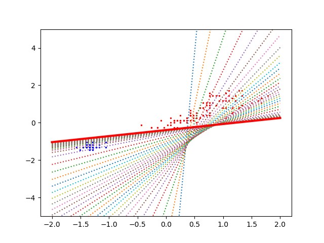
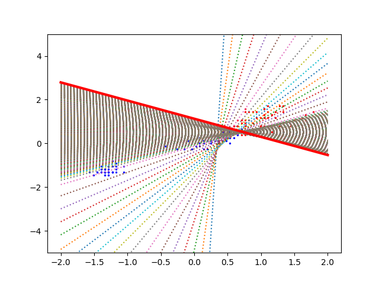
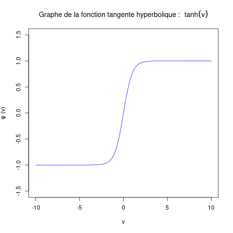

Recherche des poids d'un perceptron non linéaire
Ce TP reprend le TP précédent mais il est cette fois appliqué à un perceptron dont la fonction d'activation est une fonction sigmoïde.
Comme en cours, on considère un perceptron réel à sortie réelle. La fonction d'activation est soit la fonction logistique, soit la fonction tangente hyperbolique.
Fonction d'activation logistique
DGS pour calculer les poids d'un perceptron à fonction d'activation logistique
On adapte la DGS vue dans le TP précédent à la fonction d'activation logistique. Ci-dessous, j'indique ce qui change en rouge.
- On a un jeu d'exemples constitué de N données d'entrées et des N valeurs de sortie attendues. Chaque donnée est décrite par P attributs.
On note xi la iè donnée et xi,j l'attribut j de la iè donnée. On note yi la sortie attendue pour la iè donnée. Le iè exemple est donc le couple (xi, yi). - On effectue la descente de gradient stochastique :
- centrer et réduire les exemples.
- Initialiser les P poids avec une valeur quelconque.
- corrections = 1
- Tant-que |corrections| > ε:
- corrections = 0
- Pour chaque exemple xi:
- on calcule la sortie s du perceptron pour cet exemple.
- On en déduit la classe prédite : si s ≥ 1/2, alors classe.prédite = 1, sinon classe.prédite = 0.
- d = classe.prédite - yi
- Si d est non nulle alors
- biais = biais - η d s (1 - s)
- corrections = corrections + |η d s (1 - s)|
- Pour chaque poids j :
- pj = pj - η d xi,j s (1 - s)
- corrections = corrections + |η d xi,j s (1 - s)|
- C'est fini.
Nous allons écrire le programme en python qui fait cela. Nous allons introduire un certain nombre de raffinements par rapport à ce que nous avions fait dans le TP précédent.
Quelques éléments pour la mise en œuvre
On précise quelques points nouveaux concernant l'écriture du programme en python et l'implantation de cette nouvelle version de la DGS.
Matrice de données
Dans les TPs précédents, nous avons considéré que les données sont contenues dans une liste. Dans la réalité, on les stocke dans une matrice dans laquelle chaque ligne correspond à une donnée et chaque colonne à un attribut.
Dans le TP précédent, quand nous avons utilisé le jeu de données iris, celles-ci étaient stockées dans une matrice. Je ne vous l'ai pas dit, vous ne vous en êtes pas rendu compte, ce qui montre qu'il n'y a rien de compliqué. Pour accéder à l'attribut numéro j de la donnée numéro i, on écrit nom_de_la_matrice [i, j].
Pour pouvoir utiliser des matrices, vous devez au préalable écrire dans votre programme import numpy as np.
Fonction d'activation
Il est utile de définir une fonction logistique (v) qui renvoie la valeur de la fonction logistique appliquée au potentiel v.
La fonction logistique est définie par : φ (x) = 1 / (1 + e-x). Son graphe est :

Pour utiliser la fonction exponentielle exp (), vous devez préalablement écrire l'instruction : from math import exp.
Classe prédite
Avec une fonction d'activation sigmoïde, la sortie du perceptron prend une valeur dans l'intervalle ]0, 1[. On veut interpréter cette valeur comme : si elle est inférieure à 0,5, cela signifie que le perceptron prédit la classe 0 pour la donnée placée sur son entrée ; si cette valeur est ≥ 0,5, c'est que le perceptron prédit la classe 1 pour cette donnée.
Il faut donc transformer la valeur en sortie du perceptron en un 0 ou un 1 pour pouvoir comparer la prédiction du perceptron avec l'étiquette de l'exemple.
Centrer et réduire les attributs des données
On l'a vu en cours, centrer un attribut signifie retirer la moyenne à chacune de ses valeurs et le réduire consiste à diviser l'attribut par l'écart-type de l'attribut centré.
Cette opération est essentielle si on veut que la DGS fonctionne bien.
On peut écrire soi-même une fonction pour le faire. C'est un bon exercice.
Cette opération est tellement importante qu'elle est déjà codée. On fait comme cela sur l'exemple des iris :
# on charge le jeu de données iris (cf. TP précédent) from sklearn import datasets iris = datasets.load_iris() entrées_iris = iris.data[:,2:4] # on centre et on réduit comme suit from sklearn.preprocessing import StandardScaler scaler = StandardScaler () scaler.fit (entrées_iris) # cette instruction indique que l'on veut centrer et réduire les données se trouvant dans la matrice dénommé entrées_iris. entrées = scaler.transform (entrées_iris) # cette instruction effectue le centrage et la réduction.
entrées est une matrice qui contient les iris décrits par leurs 4 attributs centrés et réduits.
Réalisation
On a maintenant tous les ingrédients pour réaliser la DGS. Pour s'assurer que le programme fonctionne bien dans un cas simple, on commence par le cas où le perceptron peut correctement calculer la sortie attendue. Une fois assuré que le programme fonctionne bien dans ce cas-là, on vérifiera qu'il fonctionne aussi lorsqu'il ne peut pas calculer correctement la valeur attendue quelle que soit la donnée en entrée.
Comme dans le TP précédent, vous utiliserez les lignes de python que je vous avez indiquées pour réaliser des graphiques.
Je résume les différents éléments expliqués ci-dessus. Vous n'avez plus qu'à compléter avec la DGS proprement dite, laquelle ressemble à ce que vous avez écrit lors du précédent TP.
'''
commentaire habituel en début de programme.
Je vous laisse compléter...
'''
# Les fonctions permettant de créer le graphique
import matplotlib.pyplot as plt
def debut_figure (entrées, sorties):
fig, ax = plt.subplots ()
couleurs = []
for i in range (len (sorties)):
if sorties [i] == 1:
couleurs.append ("red")
else:
couleurs.append ("blue")
for i in range (len (sorties)):
ax.scatter (entrées [i, 0], entrées [i, 1], color = couleurs [i], s = 2)
return fig, ax
def ajoute_droite (ax, a, b, c, xlim = [-2, 2]):
x1 = xlim
y1 = [-(xlim[0]*b+a)/c, -(xlim[1]*b+a)/c]
ax.set_ylim (bottom = -5, top = 5)
ax.plot (x1, y1, linestyle = ":")
def ajoute_dernière_droite (fig, ax, a, b, c, xlim = [-2, 2]):
x1 = xlim
y1 = [-(xlim[0]*b+a)/c, -(xlim[1]*b+a)/c]
ax.set_ylim (bottom = -5, top = 5)
ax.plot (x1, y1, color = "red", linestyle = "-", linewidth= 3)
fig.show ()
# Je charge le jeu de données iris (comme dans le TP précédent).
from sklearn import datasets
iris = datasets.load_iris()
entrées_iris = iris.data[:,2:4]
# Il est essentiel de centrer-réduire !!!!!
# On fait comme cela :
from sklearn.preprocessing import StandardScaler
scaler = StandardScaler ()
scaler.fit (entrées_iris)
entrées = scaler.transform (entrées_iris)
'''
entrées est une matrice de 150 lignes (le nombre de données iris) et 4 colonnes (les 4 attributs).
Les 4 attributs sont maintenant centrés et réduits.
'''
# Je calcule la sortie attendue pour chaque donnée.
sorties_iris = []
for i in range (len (iris.target)):
if iris.target [i] == 0:
sorties_iris.append (0)
else:
sorties_iris.append (1)
sorties = sorties_iris
# J'ai besoin d'utiliser la fonction exp(), donc j'écris :
from math import exp
# On définit la fonction logistique (je vous laisse le faire) :
def logistique (v):
...
# On va maintenant réaliser la DGS
'''
On commence par initialiser les poids. Vous initialisez avec les valeurs
que vous voulez mais si vous voulez obtenir exactement le même résultat
que moi, il faut les initialiser comme cela :
'''
a = 1
b = -3
c = 0
'''
Tout est en place.
Maintenant, vous écrivez la DGS.
'''
Distinguer une classe séparable
Lancez votre programme python. Dans la boucle pour qui égrène les exemples, comptez le nombre d'exemples mal prédits et affichez ce nombre.
On peut prendre η = 0,01 et ε = 0,001.
Vous devez obtenir le graphique suivant :

et le perceptron ne doit commettre aucune erreur de prédiction.
Cas où les classes ne sont pas linéairement séparables
Dans le cas où le perceptron ne peut pas réaliser une prédiction parfaite, le test du tant-que n'est pas adapté. Si on itère tant que la correction est supérieure à un seuil, le choix du seuil ε est compliqué : on risque soit de le prendre trop grand ce qui a pour conséquences que les poids sont ajustés grossiérement, donc que le nombre d'erreurs de prédiction est plus grand que ce qu'il devrait être ; si ε est pris trop petit, on risque de boucler infiniment car la correction ne sera jamais assez petite pour satisfaire le test et quitter la boucle. On pourrait contrecarrer ce problème soit en limitant arbitrairement le nombre d'itérations du tant-que, soit en diminuant la valeur de η au fil des itérations.
Vous essayerez deux solutions différentes :
- compter le nombre d'itérations de la boucle tant-que et quitter la boucle par exemple après 103 itérations.
- Remplacer le test :
Tant-que |corrections| > ε:
par le test :
Tant-que |corrections_précédentes - corrections_courantes| > ε: où corrections_courantes est la somme des corrections appliquées aux poids lors de l'itération précédente du tant-que et corrections_précédentes est la somme des corrections effectuées lors de l'itération encore précédente.
L'idée du test est que l'on itère tant que les corrections diminuent significativement d'une itération du tant-que à la suivante. Il faut prendre un seuil très petit, comme ε = 10-7.
Commencez par tester ces modifications sur l'exemple précédent. Vous devez obtenir les mêmes résultats que précédemment.
On va maintenant appliquer cette DGS à un cas où les données ne sont pas linéairement séparables. Pour cela, vous remplacez les lignes :
if iris.target [i] == 0:
sorties_iris.append (0)
else:
sorties_iris.append (1)
par :
if iris.target [i] != 2:
sorties_iris.append (0)
else:
sorties_iris.append (1)
uniquement ces lignes-là !
Cette fois-ci, le perceptron doit distinguer les données qui sont en haut à droite du graphique des autres. Elles se mélangent avec celles qui se trouvent au milieu et elles ne peuvent pas être séparées par une droite.
Prendre une valeur encore plus petite du seuil que plus haut, par exemple ε = 10-8.
Vous devez obtenir ce graphique :

et le perceptron commet 6 erreurs de prédiction.
Fonction d'activation tangente hyperbolique
La tangente hyperbolique a la même forme que la fonction logistique, sauf qu'elle est dilatée selon l'axe des ordonnées. Cette petite différence change pas mal de choses quant à l'efficacité du perceptron et de la DGS.

Vous allez refaire tout ce qui précède en changeant simplement la fonction d'activation. Il faut que vous ayez fait ce qui précède avec la fonction logistique. Les modifications à apporter sont très très simples.
Pour cela :
- il faut bien sûr changer le calcul de l'activation du perceptron. Pour utiliser la fonction tanh(), on doit auparavant effectuer l'instruction from math import tanh (à la place de from math import exp).
Quand on calcule la sortie s du perceptron, on doit donc utiliser la tangente hyperbolique à la place de la fonction logistique. - Il faut modifier la correction des poids. Le terme s (1 - s) correspond à la fonction logistique. Pour la tangente hyperbolique, il faut le remplacer par (1 - s * s).
- Puisque la tangente hyperbolique produit une valeur entre -1 et 1, il faut modifier la calcul de la classe prédite : au lieu de
si s ≥ 1/2, alors classe.prédite = 1, sinon classe.prédite = 0.
il faut comparer a à 0 :
si s ≥ 0, alors classe.prédite = 1, sinon classe.prédite = 0. - Avec ces trois petites modifications, votre programme devrait déjà fonctionner.
- Avec la tangente hyperbolique, la valeur de ε peut être bien plus grande. ε=10-5 convient, ce qui permet de réaliser moins d'itérations, donc que le calcul des poids soit plus rapide.
Pour finir
Le source de votre programme doit respecter les points suivants :
- il doit commencer par un commentaire indiquant son titre, son objet, ses auteurs, la date de réalisation.
- Que vous utilisiez des fonctions ou pas (ce n'est pas obligatoire), vous commentez votre programme avec parcimonie, là où c'est utile.
- Chaque fonction doit commencer par un commentaire indiquant au minimum ce que fait la fonction, le sens des paramètres, les pré-conditions et ce que la fonction retourne.
- Le type des paramètres des fonctions doit être indiqué, ainsi que le type de la valeur retournée.
Pour finir, vous m'envoyez votre/vos script(s) par email, en mettant votre binôme en cc.